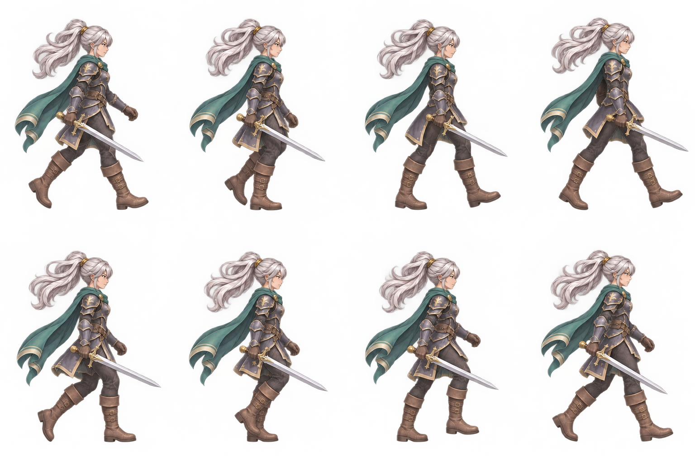

GPT 새 이미지 · 검수 도구 실증은발 검객, 새 걷기 시트 확인
이번 개선은 입력과 잘림을 검사하는 기능입니다. 자동 검사 통과가 자연스러운 걷기를 보장하지는 않습니다.
v3 입력·색·형태충족8장 모두 계산 · 사람 승인과 별도
v3 캔버스 경계 접촉0 / 8장네 방향 최소 여백 15px
v3 하단 윤곽 변화량0.307모션 품질 점수 아님
수정 시트 원본과 검사 기록

스프라이트 검사 원문 · 모션 관찰 원문 · 수정 프롬프트 · 참고한 C 보행 포즈